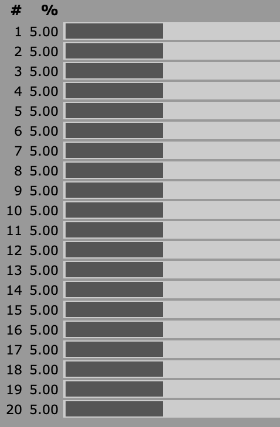

Probability for Game Designers
Specifically, myself as an aspiring table-top game designer.
In addition to game design, probability is useful lots of other places, but learning it via game design seems like fun, so I thought I would try it.
D&D (Dice & Diagrams)
Almost everything will be presented as examples with dice or other pieces of chance, such as coins or cards.
Not a lot math will be used, though one goal I have is to learn the math well enough to sort through the books and videos on probability, so I will likely show how some facets of probability from our game design perspective is expressed as math.
Any Dice
Any Dice will be used to illustrate some of the concepts. It’s a great tool, so I aim to use it to express as much as possible. I hope that you will use it too.
Percentages
Most people I believe understand percentages, at least figuratively. For my purposes, they will serve as the baseline for comparison.
For example, say I’m designing a success mechanic for an RPG, one of the first questions I might ask myself is “How would this work so that a competent character would succeed 75% of the time?”
Example of Percentage Use
GM Tanis is thinking of his game, and wants to make some challenges for his party in an upcoming adventure. He has a rough idea of how difficult he wants these challenges to be, but doesn’t know how to determine what the difficulty rating should be in his game.
He starts with a knowledge of his PCs and decides to make the challenge hard, so he opts for a 30% success chance. He will use what we learn in this series to determine what the mechanic expression should be.
Code
Simple code snippets from time to time, though this isn’t really meant to be the focus of the series. Most likely we will use Python, as that seems to be a language that translates from English well.
Distributions
One of the key questions I have, and I think most game designers should have, is how often should something succeed based on the mechanic used or character attribute.
This can be modeled as a “distribution”, which is largely a way of dividing results up into categories that might be different sizes. Distributions are usually modeled visually with a diagram called a histogram that gives a “shape”.
A Single Fair Die
To start off, let’s consider something that most of us intuitively know, a single die roll.
The number of sides is relatively immaterial for this discussion, but let’s assume a twenty-sided die (d20), a common die used in RPGs.
Rolling this die means that any individual number should come up on average 1 time per 20 rolls. (On average is important and will be explained later.)
Hopefully this just “makes sense” to you.
Percentage per Face
Again, hopefully this is intuitive, but just to explain it, to know how often a number comes up, we convert its chances to a percentage. When a dice has n faces, we say that it has a 1 in n chance of occurring. This is expressed as a fraction, \frac{1}{n}. To get the percentage, we compute the decimal representation of this fraction, so \frac{1}{20} = .05 = 5\%.
For a six-sided die (d6), each number has a 1 in 6 chance of showing face up on each roll, so the percentage chance for each number is \\frac{1}{6} \\approx 17\\% (the \\approx means approximately, though I imagine you already know this; 6 \\times 17 = 102, just a little more than 100. Converting \\frac{1}{6} = 0.1\\overline{66}, but we will convert this to our nearest whole number).
GM Tanis Example
GM Tanis is playing D&D, and wants to make his players go a certian route, but doesn’t want to make it seem like he’s railroading them, so he places a door in their path, but one that’s exceedingly hard to pass. The only way to get past it in his estimation is to roll a 20. So he looks at the sheets of the PCs and sees that PC Garrett has an Athletics bonus of +7, so that means that the DC to open the door should be 27.
(Whether or not this is the correct way to establish challenges is beyond the scope of this article.)
Distribution
The distribution, or shape of a single die is uniform. You can imagine what that means, or you can look at the handy illustration I copied from anydice.

Each number has an even chance of coming up, so the chance is uniformly distributed, making thus the distribution uniform. 👨🏫
Let’s Roll
Next up for me to learn is 2 dice rolls and how those can be combined. 🎲 🎲